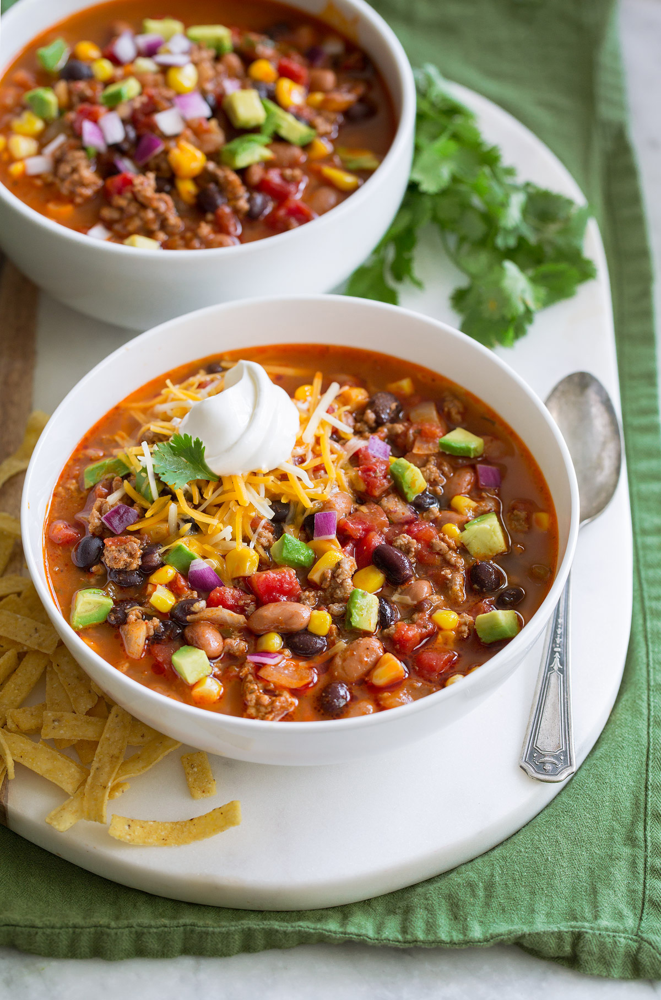

Taco Soup

An Easy Taco Soup Recipe that comes together in just 30 minutes. This hearty soup is loaded with ground beef, tomatoes, corn and beans.
Ingredients
- 1 pound lean ground beef
- 1 Tbsp oil
- 1 small onion, finely diced
- 1/2 red bell pepper, dieced
- 1/2 green bell pepper, dieced
- 16 oz can beans, drained
- 1 cup corn
- 1 1/2 cups diced tomatoes
- 3 garlic cloves
- 2 cups beef broth
- 1 packet taco seasoning
Steps
- In a Dutch oven, heat oil. Once hot, sauté ground meat breaking it up as it’s cooked, lightly season with the taco seasoning.
- Meanwhile, finely chop the onion. Cube the red pepper, green pepper and tomatoes.
- Once the meat is browned, add the remaining ingredients and seasonings. Turn heat to low and cook 12-15 minutes. Serve soup hot with desired toppings.